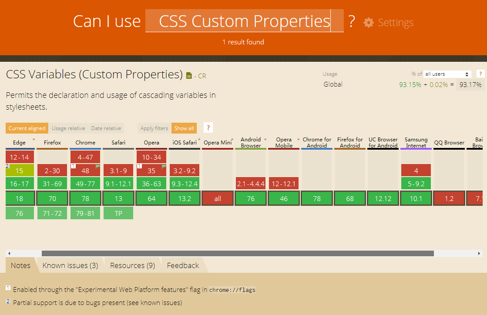

CSS Custom Properties CSS 自定义属性
引子-CSS 预处理器
目前我们进行样式开发时，一般都会在选型阶段选择CSS预处理器，目前使用的就是sass&less，可以说CSS预处理器是目前我们项目中必不可少的。理由就是它灵活好用，可以使用变量(variables)，代码混合(mixins)，嵌套(nested rules)以及代码模块化(Modules)。
例如：
$baseColor: #ffffff;
body {
color: $baseColor;
}
@mixin baseColor {
&:after {
color: #ffffff;
}
}
body {
@include baseColor;
}
body {
.container {
p {
color: #ffffff;
}
}
}
@import './common';
预处理器的确大大提高了我们样式开发的速度，方便快捷。但相对的，它需要额外的编译配置，并且每次修改重新编译的时间远高于原生css。另外，虽然目前常用的预处理种类不算太多，但是不同的预处理器（例如sass跟less）之间的语法各有差别，存在学习跟迁移成本。
预处理器最大的限制是:
1.不能动态修改变量
2.没有DOM结构的意识
3.不能使用JavaScript读取或更改
如果不使用预处理器，能否用原生CSS实现我们想要的效果，这就引出了CSS的新属性-CSS Custom Properties - CSS 自定义属性。
CSS Custom Properties - CSS 自定义属性
CSS自定义属性在2012年10月首次提出，现在浏览器支持程度已经接近93%（IE支持较差，目前全面不支持），被誉为是在一定程度替代预处理器的新属性。
Can I user CSS Custom Properties
CSS Custom Properties for Cascading Variables

css custom propertiy 使用 -- 声明一个属性，通过var()函数使用
:root {
--main-color: #06c;
}
/* The rest of the CSS file */
.variables-example-class {
color: var(--main-color);
}
var()函数的第二个参数可以作为默认值，在没有定义变量时使用默认值
:root {
}
/* The rest of the CSS file */
.variables-pre-example-class {
color: var(--none-color, #ff9999);
}
使用calc()函数可以在变量内实现计算
:root {
--indent-size: 15px;
--indent-xl: calc(2 * var(--indent-size));
--indent-l: calc(var(--indent-size) + 2px);
--indent-s: calc(var(--indent-size) - 2px);
}
/* The rest of the CSS file */
.variables-xl-example-class {
font-size: var(--indent-xl);
}
.variables-l-example-class {
font-size: var(--indent-l);
}
.variables-s-example-class {
font-size: var(--indent-s);
}
使用calc()函数需要注意的是，不能计算 不带单位 的值
:root {
--font-size: 10;
}
.box {
font-size: var(--font-size)px; /* 不生效 */
font-size: calc(var(--font-size) * 1px); /* 生效 */
}
由于部分浏览器（IE）目前的支持仍然不好，因此我们可以使用@support进行兼容性判断
// CSS判断
@supports ((--a: 0)) {
/* supported */
} @supports (not (--a: 0)) {
/* not supported */
}
// js判断
window.CSS && window.CSS.supports && window.CSS.supports('--a', 0);
CSS 自定义属性的作用域和继承性
以Sass为例，在Sass中，变量有两种类型：本地（local）和全局（global）。
在任何选择器或构造器（比如混合宏）声明的变量是全局变量，否则是本地变量。
任何嵌套的代码块都可以访部封闭内的变量（和JavaScript类似）。
可以说，在Sass中，变量的作用域完全依赖于代码的结构。
$globalLen: 100px; // 全局变量
.con {
$conLen: 200px; // 本地变量
.box {
$boxLen: 300px; // 本地变量
}
}
而css 自定义属性和css其他属性是一样的，是默认继承的(根据DOM的结构)。
它的全局作用域就是:root
:root {
--font-size: 10px;
}
CSS 自定义属性的使用
上面我们提到，预处理器有一个缺点：没有DOM结构的意识，这里具体体现在无法在样式中增加DOM结构相关的判断，例如：
使用样式实现.div-example块级元素若有class: xl-size，则字号为30px，否则为15px
$xl-size: 30px;
.div-example {
$normal-size: 15px;
@if variable-exists(xl-size) {
font-size: $xl-size;
} @else {
font-size: $normal-size;
}
}
这段样式在实际使用中不会出现任何效果，因为在预处理器编译的时候，它不知道任何关于DOM结构，完全依赖于代码的结构。因此也无法判断当前div是否存在class: xl-size。
.xl-size {
--xl-size: 30px;
}
.div-example {
--normal-size: 15px;
font-size: var(--xl-size, var(--normal-size));
}
另一个上面提到的预处理器缺点：不能使用JavaScript读取或更改。
在没有出现css自定义属性之前，我们很难去修改CSS的变量值，比如如果我们需要改变过渡动画，则必须去改变整个属性或者添加其他的类。现在使用 CSS 自定义属性中的变量，可以实现直接通过JS获取变量值并进行修改
.use-example {
--color: red;
color: var(--color);
}
const userExample = document.querySelector('.use-example');
// GET
const userExampleColor = getComputedStyle(userExample).getPropertyValue('--color');
// SET
userExample.style.setProperty('--color', 'green');
这里我说一个实际开发中遇到的问题，那就是我们常用的:before&:after选择器样式的修改，以content为例：
首先目前最主流的修改方式是通过获取data-text的值，去改content的值（兼容性良好99%）
.before-example::before {
content: attr(data-text);
}
$(e.currentTarget).attr('data-text', 'before-content-修改后');
修改content，可以通过data-*属性，但是修改其他样式相关属性，则需要通过多种兼容方式去进行style操作修改，较为麻烦
document.styleSheets[0].insertRule('.test::before{color:green}',0) // chrome,firefox等非IE浏览器使用
document.styleSheets[0].addRule('.test::before{color:green}',0) // IE系列浏览器使用
如果使用自定义属性，则很方便的实现伪类样式的修改（但与data-*属性相反，伪类样式不能修改content）：
.after-example {
--after-color: red;
--after-content-color: green;
}
.after-example::after {
display: block;
content: 'after-content-修改属性';
color: var(--after-color);
background: var(--after-content-color);
}
afterExample.style.setProperty('--after-color', 'green');
afterExample.style.setProperty('--after-content-color', 'red');
目前自定义属性已经有很多使用场景，例如：
模拟不存在的CSS属性：box-shadow-colorCSS 自定义属性与预处理器
通过上面的比较，不难发现css自定义属性其实并不能代替预处理器，预处理器中的模块化跟嵌套，的确大大方便我们的开发跟代码的可读性，但是在只需要使用变量或需要通过脚本结合样式改变的情况下，css自定义属性不失为一个更好的选择。